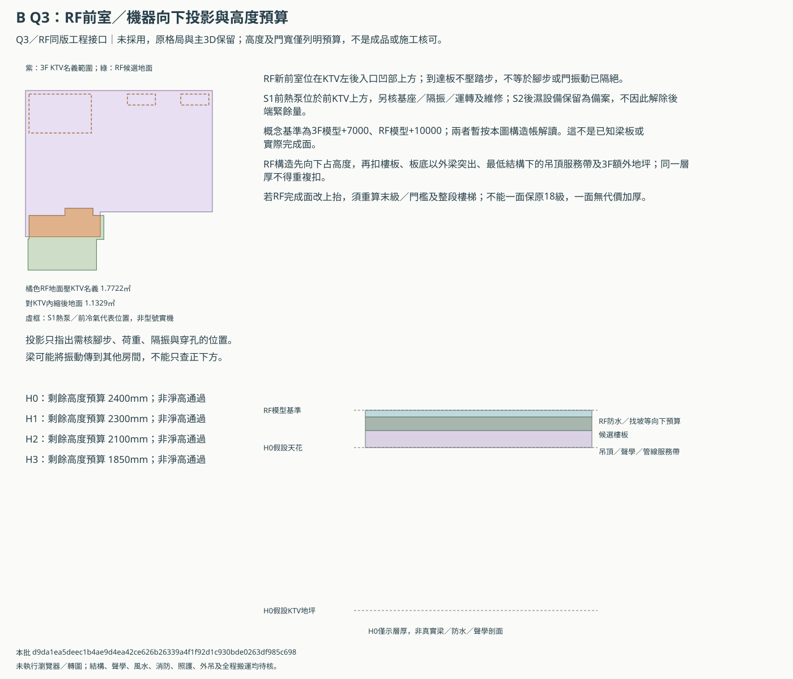
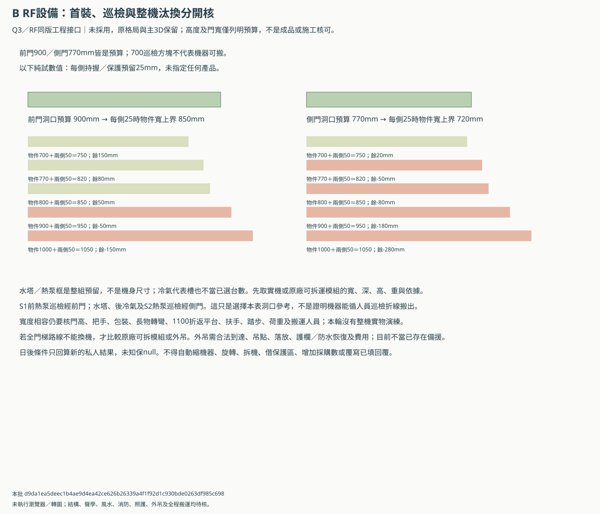
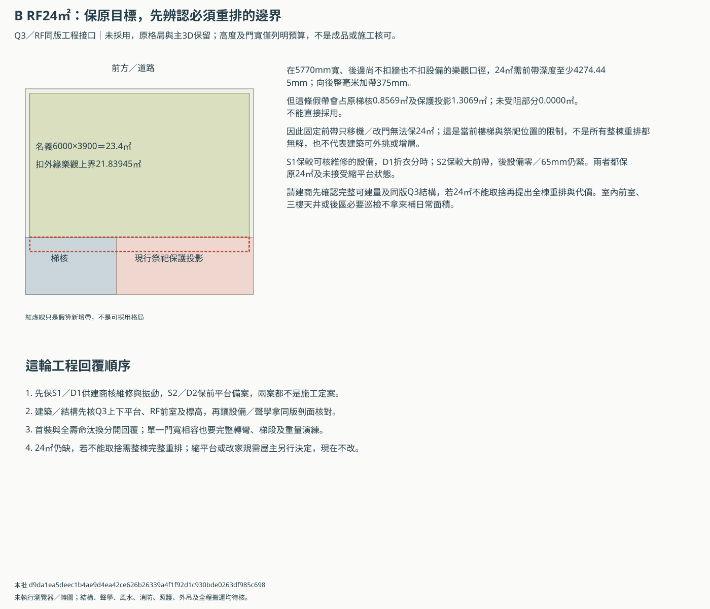

B Q3／RF：剖面、整機汰換與工程先決條件
獨立同版工程研究／未採用。原格局與主3D不改，門寬數值相容不是搬運通過；高度預算不是法定或實測淨高。
這輪把新前室與機器向下投影、KTV高度預算、首裝／巡檢／汰換及RF24㎡邊界放在同一版，供建商統籌建築、結構、機電與聲學。
垂直投影與四種高度預算


前900／側770：整機換出還差哪些條件


24㎡必要邊界及工程回覆順序


層厚算式沒有選材或淨高通過
| 例 | RF構造 | 樓板 | 梁增量 | 吊頂服務帶 | 3F增高地坪 | 剩餘預算mm |
|---|---|---|---|---|---|---|
| H0 | 100 | 200 | 0 | 250 | 50 | 2400 |
| H1 | 100 | 200 | 0 | 350 | 50 | 2300 |
| H2 | 100 | 200 | 300 | 250 | 50 | 2100 |
| H3 | 150 | 250 | 300 | 350 | 100 | 1850 |
日後產品條件回套
下載actual-data-template.json，另存私人條件檔；八列分兩案四種有身分／用途的設備，全部未知保null。寬與兩側持握預算有資料才比洞口，深、高、重及產品／運輸依據保留供整段人工核對；不自動旋轉或拆機。
| 方案／設備 | 巡檢門參考 | 洞口預算mm | 本輪條件狀態 | 完整搬運核可 |
|---|---|---|---|---|
| Q3-D1-front-heat-pump:tank | side | 770 | pending | 未知 |
| Q3-D1-front-heat-pump:heat-pump | front | 900 | pending | 未知 |
| Q3-D1-front-heat-pump:B-AC03 | side | 770 | pending | 未知 |
| Q3-D1-front-heat-pump:B-AC04 | side | 770 | pending | 未知 |
| Q3-D2-rear-wet-pair:tank | side | 770 | pending | 未知 |
| Q3-D2-rear-wet-pair:heat-pump | side | 770 | pending | 未知 |
| Q3-D2-rear-wet-pair:B-AC03 | side | 770 | pending | 未知 |
| Q3-D2-rear-wet-pair:B-AC04 | side | 770 | pending | 未知 |
九項工程回覆
| ID | 議題 | 窗口 | 回覆內容 |
|---|---|---|---|
| BQG-01 | 同版平台、前室、梯井與屋突 | 建築師＋結構 | 2200×1000平台、2170×755前室的板邊、厚度、梁柱支承與完整梯井剖面；同核屋突、完成面和防雨，不用整房間實心板封洞。 |
| BQG-02 | RF至KTV的標高與聲學 | 建築師＋結構＋聲學＋機電 | 先註明模型基準是結構或完成面，再出RF防水／找坡、梁底、KTV地坪／吊頂與消音管線同版剖面；門檻、末級踏步及全程淨高一起重核。 |
| BQG-03 | 水塔、熱泵與冷氣荷重／振動 | 設備商＋結構＋聲學 | 分列滿水重、設備運轉重、支腳／基座受力、維修荷載、防颱與隔振；屋頂平面避床體不代表梁板或結構傳音成立。 |
| BQG-04 | 首裝、巡檢及整機汰換 | 設備商＋建商＋建築師 | 提供含包裝或拆裝後最小運輸模組的寬深高重、持握餘量、可拆依據與完整搬運演練；不能把700巡檢線或整組預留框當成品可搬。 |
| BQG-05 | 外吊備援的完整範圍 | 建商＋吊運廠商＋結構＋建築師 | 若門梯無法換機，另核吊車到達／權利、吊點與落放區、護欄可拆、屋頂承載、防水恢復、費用及後續維修合約；目前未畫核准吊點，也未授權穿越鄰地。 |
| BQG-06 | KTV關門通風與聲學旁通 | 機電＋聲學＋消防 | 專支、消音器、檢修及新風／回排氣需同版預留，不能靠開梯門；香火、一般新風、浴廁排氣、污水通氣與雨水分系統核對。 |
| BQG-07 | RF24㎡及三樓工作天井各自列帳 | 建築師＋建商，必要取捨再由屋主決定 | 若24㎡仍為目標，提出完整全棟重排與合法可建量，不能只移機器、借祭祀保護區、室內前室或三樓4㎡天井補算；原目標及較小平台未接受狀態保留。 |
| BQG-08 | 門組、火煙、防雨與救援 | 建築師＋消防＋門廠 | 前900／側770僅扣框預算，需成品完成淨寬、門檻、自閉／逃生、防火隔煙、防雨及開門風壓；不因幾何全開可通就當消防或照護核可。 |
| BQG-09 | 既有未解工程及版本發行 | 建商統籌建築／結構／機電 | P3前落水、R1天井防水乾衣、屋頂排水與回吸另回覆；同一圖號及來源版本通過後才評併圖，不繼承其他樓梯或舊passed。 |
條件及限制
- 本輪只深化Q3／RF工程接口，不改房間、門窗、設備、樓梯或149控制；前門搬轎備案及後門預設完整保留，不併原ABC／3D。
- RF地面、設備向下投影是荷重、振動及穿孔協調範圍，不是把預留框當實機或證明風水、結構、隔音已核。祭祀保護與非日常巡檢用途不放寬。
- 垂直四例只是列明層厚的算式，不是法定淨高、實測或選材。3000mm沿模型兩基準面，RF完成面暫維持該基準；未知基準、梁板與找坡需專業回覆。
- 層厚不得重複扣算：RF基準到結構板頂的構造向下扣、板厚再扣、梁只加扣突出板底部分、吊頂／服務帶由最低構造下緣再扣。3F地坪只計相對原模型額外抬高。
- 若選擇讓RF完成面向上抬而非向下容納找坡／防水，不能仍沿用本表高度與18級樓梯；末級、門檻、防火、防雨及所有梯段須另算。
- 前900／側770只是預算；新條件表只比指定運輸姿態在單一洞口的寬度，未核長深高、轉彎、扶手、坡梯、載重、保護區與整段動線。寬度相容永遠不是搬運通過。
- 水塔／泵浦與熱泵位置是整組預留，不把1500或2000等框尺寸當型號機身。代表槽沒有採購身分，不新增或重複計台數。
- 實際條件只寫新私人回算目錄；空白保null、假值不補零，產品／運輸參考必填，不自動縮物件、旋轉、拆機、搬位、開外吊口或更改需求。
- 24㎡固定前帶的樂觀上界21.83945㎡仍不足。假設全寬向後加帶只是顯示與保護區／梯核衝突，不是建議侵入、外挑、增層或證明所有整棟方案不可能。
- KTV20.1889㎡只是指定平面預算，聲學、樓板及通風可再吃面積與高度；新前室與屋頂機器的振動不能靠面積通過掩蓋。
vertical-budgets.csv／door-width-trials.csv／replacement-conditions.csv／equipment-projections.csv／engineering-replies.csv／actual-data-template.json
本批 d9da1ea5deec1b4ae9d4ea42ce626b26339a4f1f92d1c930bde0263df985c698；未跑瀏覽器／WebGL，未取得結構、消防、聲學、風水、吊運或施工核可。